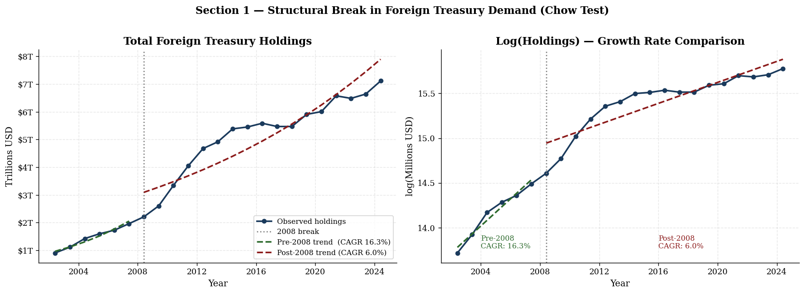
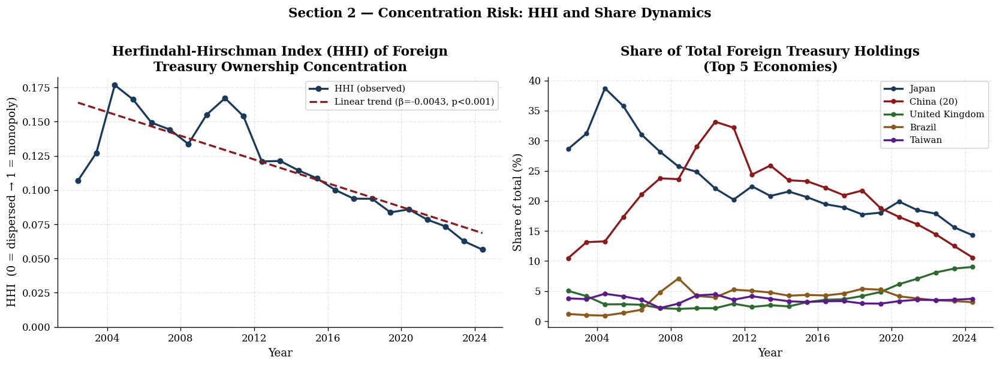
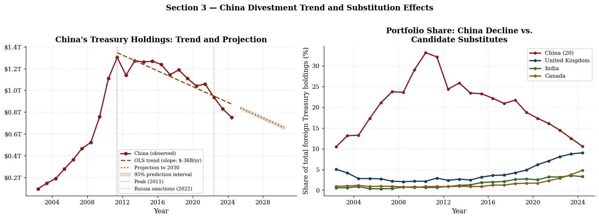
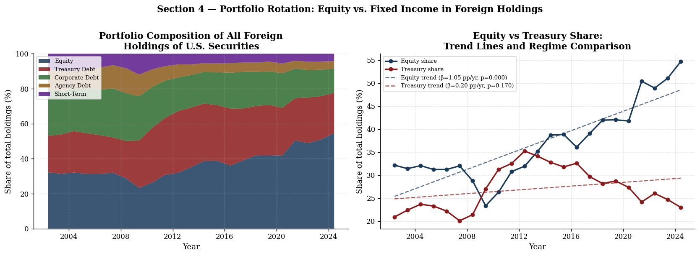
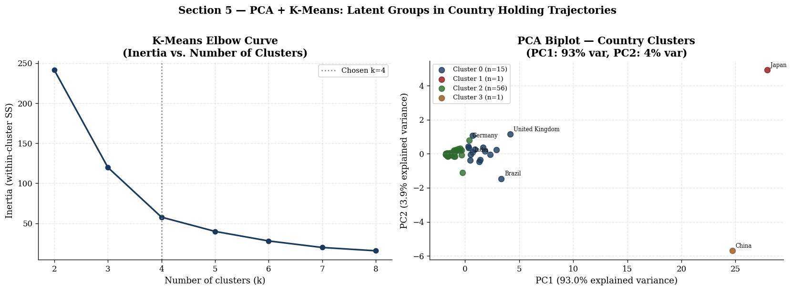
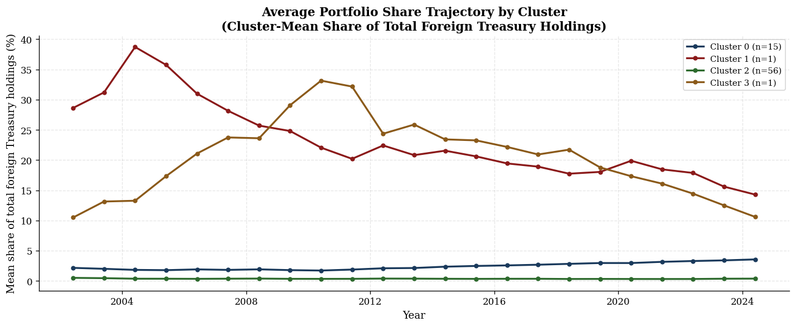

For a long time, foreign Treasury ownership was a simple story: Japan and China buying U.S. debt. It has since become something more complicated. The creditor base has shifted, China has been selling steadily, and the composition of what foreigners actually hold looks very different today than it did in 2002. I used the TIC SHL survey data to look at five specific questions about how that structure has evolved. Each question called for a different method, and I picked them because they fit the problem, not to pad the methodology section.
Foreign Treasury holdings went from $0.91 trillion in 2002 to $7.11 trillion by 2024, a 683% increase over 22 years. The question I wanted to answer was whether that growth follows a single trend or whether 2008 broke it into two distinct regimes. A log-linear model converts the slope into an approximate annual growth rate, and the Chow test checks formally whether the pre- and post-2008 slopes are actually different from each other.
Where $H_t$ is total foreign Treasury holdings in trillions at time $t$, and $\beta \approx \text{CAGR}$ (continuous compounding rate).
$RSS_R$ = residual sum of squares under parameter stability (pooled). $RSS_U$ = combined RSS from separate pre/post regressions. $k$ = number of parameters. Under $H_0$: $\beta_{\text{pre}} = \beta_{\text{post}}$.

| Sample | β (log slope) | CAGR (%) | R² | p-value | Chow F |
|---|---|---|---|---|---|
| Pre-2008 | 0.1509 | 16.29% | 0.960 | 6.1×10⁻⁴ | — |
| Post-2008 | 0.0585 | 6.03% | 0.799 | <1×10⁻⁶ | — |
| Full Sample | 0.0894 | 9.35% | 0.885 | <1×10⁻⁶ | — |
| Chow Test | — | — | — | 4.76×10⁻⁵ | 17.59 |
The break is real. Pre-crisis, foreign demand was growing at 16.3% per year. After 2008 that number drops to 6.0%, and the Chow test confirms these slopes are statistically different (F = 17.59, p < 0.001). The level of holdings shifted up permanently after the crisis but the growth rate never came back.
When a small number of countries hold most of the foreign-owned debt, any coordinated selling creates real rollover risk. The HHI is the standard way to measure that kind of concentration, and running it year by year gives a clear picture of how the creditor base has changed in structure over time.
Where $s_{it}$ is country $i$'s share of total foreign Treasury holdings in year $t$. $\text{HHI} \in (0,1]$; higher values indicate greater concentration. A monopoly holder yields $\text{HHI} = 1$.

| Metric | Value |
|---|---|
| HHI in 2002 | 0.107 |
| HHI in 2024 | 0.056 |
| Total Reduction | 47.2% |
| Annual Trend Slope | −0.0043 per year |
| Trend R² | 0.700 |
| Trend p-value | <0.000001 |
The creditor base is meaningfully less concentrated than it was in 2002. Japan's share dropped from 29% to 14%, and China peaked at 33% in 2010 and has since fallen to 11%. The space they left behind has been picked up by a wider group of countries, which is better for debt management stability even if it makes the overall picture harder to track.
China's Treasury holdings peaked at $1.302 trillion in 2011 and have been falling ever since, reaching $0.753 trillion by 2024. This gets a lot of attention, but the more interesting question is whether the selling creates an actual demand gap or whether other buyers are filling it in.
$H_t^{CN}$ = China's holdings in year $t$. $\hat\beta = -36.21$ B USD/year, 95% CI: $[-48.1,\ -24.3]$ B USD/year.
A negative $r$ between China's share $s_t^{CN}$ and country $j$'s share $s_t^j$ is direct evidence of systematic substitution.

| Metric | Value |
|---|---|
| Peak Holding (June 2011) | $1.302 trillion |
| Holding in June 2024 | $0.753 trillion |
| OLS Slope | −$36.21 billion/year |
| 95% Confidence Interval | [−$48.1B, −$24.3B] |
| R² | 0.786 |
| p-value | 2.41×10⁻⁵ |
| Projected Holding 2030 | $0.657 trillion |
| Country | Pearson r | p-value | Significance | Direction |
|---|---|---|---|---|
| United Kingdom | −0.702 | 1.87×10⁻⁴ | *** | Substitution |
| France | −0.657 | 6.62×10⁻⁴ | *** | Substitution |
| Canada | −0.589 | 0.00312 | *** | Substitution |
| Korea, South | −0.549 | 0.00667 | *** | Substitution |
| India | −0.435 | 0.03799 | ** | Substitution |
| Norway | −0.378 | 0.0756 | * | Substitution |
| Japan | −0.104 | 0.638 | n.s. | Neutral |
| Taiwan | −0.002 | 0.992 | n.s. | Neutral |
*** p < 0.01 ** p < 0.05 * p < 0.10 n.s. = not significant
China is selling at roughly $36 billion per year and the regression is tight. Looking at how each country's share correlates with China's, the UK, France, Canada, and South Korea all move in the opposite direction in a statistically meaningful way. Japan and Taiwan show no systematic relationship with China's trajectory at all. So far the market is absorbing it without a visible demand shortfall.
The TIC data covers all U.S. long-term securities, not just Treasuries. Over the past two decades U.S. equities dramatically outperformed bonds, and the spread of passive index funds meant more and more of that performance ended up in foreign portfolios almost automatically. I wanted to see whether the composition of what foreigners hold has actually shifted, or whether the nominal amounts just grew alongside everything else.
More appropriate than the standard $t$-test here given the evident difference in variability between the early (2002–2010) and late (2014–2024) periods. Result: $t = -6.61$, $p < 0.00001$.

| Metric | Equity Share | Treasury Share |
|---|---|---|
| Value in 2002 | 32.17% | 20.93% |
| Value in 2024 | 54.66% | 23.03% |
| Change (pp) | +22.49 pp | +2.10 pp |
| Annual Trend Slope | +1.051 pp/year | +0.204 pp/year |
| Trend R² | 0.735 | 0.088 |
| Trend p-value | <0.000001 | 0.170 (n.s.) |
| Welch t-statistic | −6.61 | — |
| Welch p-value | 0.00001 | — |
The equity share went from 32% in 2002 to nearly 55% in 2024, gaining about a percentage point per year with an R² of 0.735. The Treasury share has no significant trend over that same period. This matters because equity ownership is a fundamentally different kind of external liability. There is no rollover risk, and foreign returns end up tied to how the U.S. economy actually performs.
With 247 countries across 23 years, you cannot look at the raw data and expect to see anything useful. PCA brings the dimensionality down to something workable by finding the directions in the data that carry the most variation. From there, K-Means groups countries by how similar their trajectories have been over time, without any prior assumptions about which countries belong together.
$\mathbf{X} \in \mathbb{R}^{73 \times 23}$ is the demeaned country-by-year share matrix. $\mathbf{V}_k$ contains the top $k$ right singular vectors. PC1 alone explains 93.0% of total variance.
Minimises within-cluster sum of squares in PCA space. $K = 4$ selected by elbow method. $\boldsymbol{\mu}_k$ = centroid of cluster $k$. Cluster assignments are unsupervised — no country labels provided to the algorithm.
| Component | Variance Explained (%) | Cumulative (%) |
|---|---|---|
| PC1 | 92.96% | 92.96% |
| PC2 | 3.86% | 96.82% |
| PC3 | 2.51% | 99.32% |
| PC4 | 0.19% | 99.51% |
| PC5 | 0.15% | 99.66% |
| Cluster | n | Mean Share | Profile | Notable Members |
|---|---|---|---|---|
| 0 | 15 | 2.40% | Large Western economies; growing or stable shares | UK, Canada, France, India, Brazil, Switzerland, Norway |
| 1 | 1 | 23.12% | Mega-holder; long history, gradually declining | Japan |
| 2 | 56 | 0.35% | Small to mid-sized; minimal share | Australia, Austria, Bahamas, Argentina, others |
| 3 | 1 | 20.37% | Strategic reducer; large but falling share | China |


PC1 alone explains 93% of the total variance, which basically means the data is dominated by differences in scale. Japan and China both end up as singleton clusters, something the algorithm worked out entirely on its own. The 15-country middle tier is the most structurally interesting group. These are the economies that have been growing into the space as China pulls back, and lumping them in with the 56-country peripheral group would miss that story entirely.
| Method | Application |
|---|---|
| Log-Linear OLS | Models exponential growth in holdings; slope ≈ CAGR |
| Chow Test | Tests whether regression parameters differ across a known break date |
| Herfindahl-Hirschman Index | Measures portfolio concentration as sum of squared country shares |
| Pearson Correlation | Tests systematic co-movement between two country share series |
| Welch Two-Sample t-Test | Compares period means without equal-variance assumption |
| Principal Component Analysis | Reduces 23-dimensional country trajectories to dominant components |
| K-Means Clustering | Groups countries by behavioral similarity in PCA space |
This work draws on a few well-established lines of research. The safe-asset shortage hypothesis from Caballero, Farhi, and Gourinchas (2017) is the natural backdrop for why the level of foreign holdings shifted up after 2008 even as growth slowed. The HHI findings fit into the reserve management literature, which has long documented how Treasury accumulation has broadened beyond just Japan and China. Gourinchas and Rey's exorbitant privilege framework is the right lens for thinking about what the portfolio composition shift actually means for the U.S. external position.